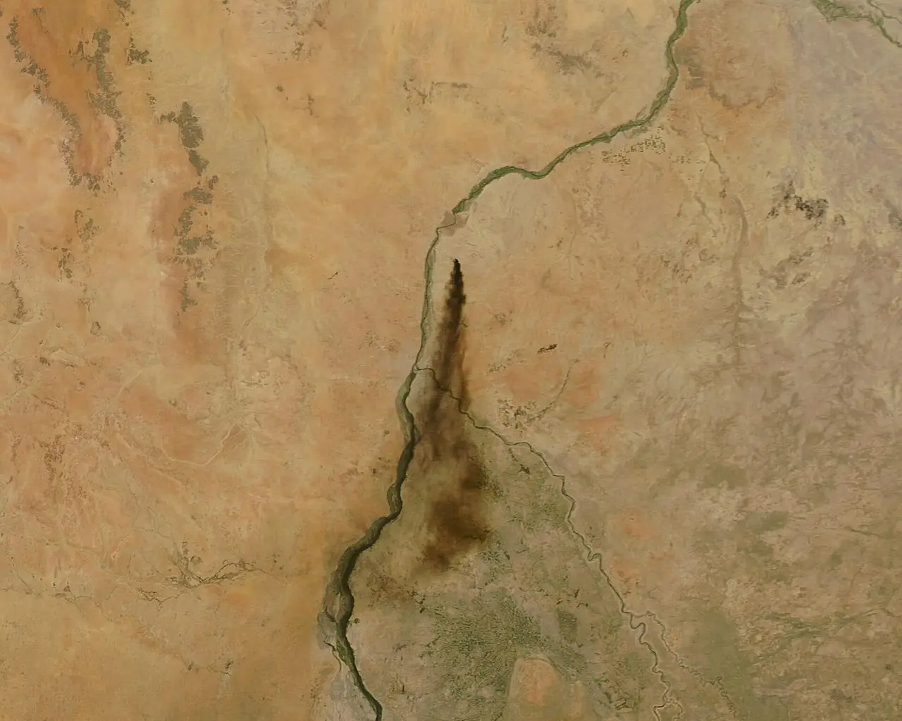
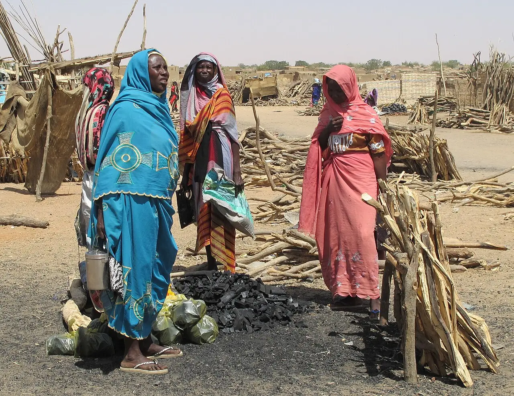
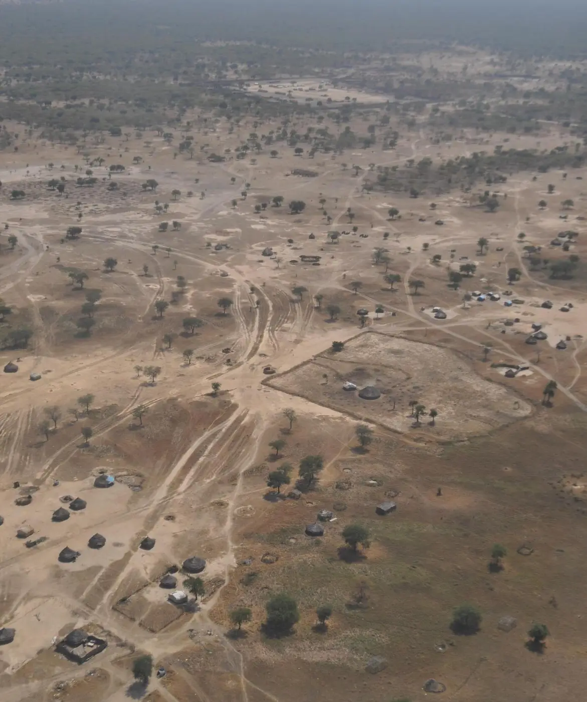

Sudan's long war
Since 15 April 2023, fighting between Sudan's army and the paramilitary Rapid Support Forces has killed at least 59,000 people by one count, and possibly far more, and driven about 13 million from their homes. Both sides deny targeting civilians. The war now reaches into Abyei and South Sudan.
Displaced people in Blue Nile state say aid falls short as food and medicines run low; the state aid commissioner counts about 27,400 displaced and says WFP and others are delivering aid.
Since April 2023 Sudan's army and the paramilitary RSF have fought a war that has killed at least 59,000 people by one count.
ACLEDAbout 13 million people have fled their homes, and the UN rights chief says drones have caused most civilian deaths this year.
Al Jazeera · Radio TamazujUN-led ceasefire talks resumed in Geneva in October without either side; the army chief rejects negotiations.
UN News · Al Jazeera

The background

.jpg){kind=link}
The war began in Khartoum on 15 April 2023. ACLED has recorded at least 59,000 deaths and says the real toll is likely higher.
More detail and sources
The war broke out in Khartoum on 15 April 2023, after the army and the Rapid Support Forces split over plans to fold the paramilitary into the military. The conflict monitor ACLED has recorded at least 59,000 deaths in three years and says the real toll is likely higher; in 2024 the US envoy cited estimates of up to 150,000. Both sides now use armed drones: the UN human rights office recorded more than 1,000 civilians killed by drone strikes between January and May 2026. AP via CP24 · Al Jazeera · ACLED
When the RSF overran El Fasher in October 2025, the UN says more than 6,000 people were killed in just over three days.
More detail and sources
In Darfur, the RSF and allied militias besieged El Fasher for more than 18 months and overran it on 26 October 2025. The UN human rights office says more than 6,000 people were killed in just over three days: at least 4,400 inside the city and more than 1,600 as they fled. It says the real toll is “undoubtedly significantly higher” and that sexual violence was used systematically as a weapon of war. AP via OPB
About 13 million people have been forced from their homes; 4.3 million are refugees abroad.
More detail and sources
About 13 million people have been forced from their homes; UNHCR says 4.3 million are refugees in neighbouring countries, most in Egypt and eastern Chad. Famine was confirmed in Zamzam camp in 2024 and in El Fasher and Kadugli in 2025. In May 2026 the IPC found no area in famine but 14 areas at risk, and nearly 19.5 million people, more than 40% of the population, facing high levels of acute food insecurity. Al Jazeera · Radio Dabanga · WFP · AP via WTOP
Both sides face accusations of atrocities, and ceasefire talks resumed without either warring party.
More detail and sources
Both sides face accusations. In January 2025 the US found that the RSF was committing genocide; in 2025 it also found that Sudan's government had used chemical weapons in 2024, which Sudan denies. The International Criminal Court says it has “concrete evidence” linking RSF leaders to recent war crimes in Darfur. UN-led talks on a ceasefire resumed in Geneva in October 2026 without either warring party at the table. AP via ClickOnDetroit · UPI · BBC via MyJoyOnline · UN News
Timeline
Newest first. Every update links to its sources.
- Latest
On 1 November displaced people in Blue Nile state told Radio Tamazuj that aid was not meeting their basic needs, with food and medicines short and mosquito-borne disease spreading. The state's humanitarian aid commissioner, Gisma Abdel-Karim, put the displaced at about 27,400 (Dabanga, citing the commission on 28 October, gives the figure as families, in three localities) and said WFP, ADRA and Islamic Relief were delivering food baskets, cash and hygiene supplies. Fighting in the state involves the army, the RSF and the SPLM's armed wing, Dabanga reports. Radio Tamazuj · Dabanga
On 31 October UN Secretary-General António Guterres, through his spokesman, said he "strongly condemns the escalating drone attacks in Sudan by the parties to the conflict" and called for civilians and civilian infrastructure to be spared, AFP reports. The statement followed the 26 October strike on Nyala's Tanqonj market, which AFP says killed at least 102 people and which has been attributed to the army. No army or RSF response was reported. Arab News (AFP)
102killed in Nyala market strike (AFP)On 30 October Al Jazeera reported an investigation by the Centre for Information Resilience, a UK open-source group, which identifies 25 commanders of the RSF, the Sudanese Armed Forces and allied forces it has reasonable grounds to believe were directly or indirectly responsible for sexual violence at five locations and periods of reported abuse, including El Fasher, Zamzam camp and parts of Gezira. The group does not attribute specific rapes to individuals. Neither force responded to Al Jazeera; both have previously denied sexual violence by their personnel. Al Jazeera
25commanders named by investigators (CIR)On 29 October UNICEF said at least five children, three boys and two girls aged 7 to 14, were among those killed in the Nyala market strike. The same day a Yale Humanitarian Research Lab report, based on satellite imagery, found a near-total absence of civilian life in El Fasher a year after the RSF took the city, with excavation and burning sites at five hospitals and an earth barrier about 75 km around it. The report says this contradicts RSF claims that life has returned to normal. UN News · Dabanga
5children killed in Nyala strike (UNICEF)On the evening of 26 October a drone strike hit a busy market in west Nyala, South Darfur, which the RSF holds. MSF, which attributes it to the Sudanese Armed Forces, said Nyala Teaching Hospital received 36 bodies, 21 in civilian clothing, and more than 150 wounded; the rights group Emergency Lawyers put the toll above 100. The army has not commented. On 27 October large parts of Khartoum lost power for over 12 hours after a drone hit a transformer station in Omdurman; an electricity official blamed the RSF. MSF · AP via ClickOnDetroit
36bodies received at Nyala hospital (MSF)
Show 2 earlier updates ↓
Drone strikes are intensifying. On 25 October the UN human rights office said strikes attributed to both the army and the RSF killed at least 306 people in the first three weeks of October 2026. The deadliest it listed hit a transport truck at Dibab, West Kordofan, on 18 October, killing at least 139. UN rights chief Volker Türk said drones have caused most of Sudan's conflict-related civilian deaths this year. Radio Tamazuj · Dabanga
306killed by drones, 1–21 Oct 2026 (UN)The war crosses borders. On Monday 19 October 2026 a drone strike on Amiet Market in Abyei, an area claimed by both Sudan and South Sudan, killed at least 153 people, a local official says. South Sudan blames Sudan's army; an unnamed Sudanese officer told AP the army hit fuel tankers bound for the RSF. In November 2025 an RSF drone attack on the Heglig oil facility halted production and exports in parts of Sudan and South Sudan, where oil brings in more than 90% of government revenue. Al Jazeera · Radio Tamazuj
In pictures




- Army chief Abdel Fattah al-Burhan rejects negotiations and says the “military option” will continue until the RSF is removed from Sudan.
- The RSF has repeatedly denied widespread killings in Darfur; its leader, Mohamed Hamdan Dagalo, has acknowledged abuses by his fighters but disputed their scale.
- The RSF and its allies have formed a parallel government in areas they hold.
- The RSF did not respond to AP's request for comment on the UN's El Fasher findings.
- Neither the RSF nor the army responded to Al Jazeera on the sexual-violence findings; both have previously denied such abuses.
- Blue Nile's humanitarian aid commissioner says aid is being delivered with partners "to ensure that distribution reflects actual needs".
In the daily edition: Mon 02 Nov · Sun 01 Nov · Sat 31 Oct · Fri 30 Oct · Thu 29 Oct · Wed 28 Oct · Mon 26 Oct · Thu 22 Oct · Wed 21 Oct · Tue 20 Oct · Mon 19 Oct
Other Focus stories
- Congo cobalt and coltan mining: child labour, M23 and Apple
- Siang dam protests: 69 arrests in Arunachal, detentions in Delhi
- Tibet human rights: boarding schools, monks jailed, succession
- Indonesia haze 2026: Kalimantan and Sumatra fires
- Brazil election 2026: what Lula's win means for rights
- India, Meta and protest posts: who decides what you see online